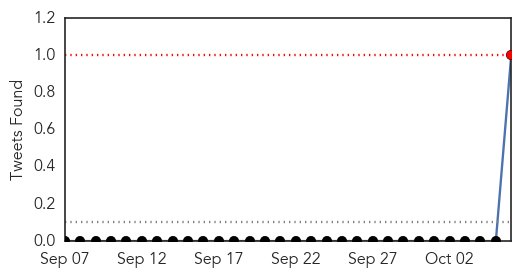
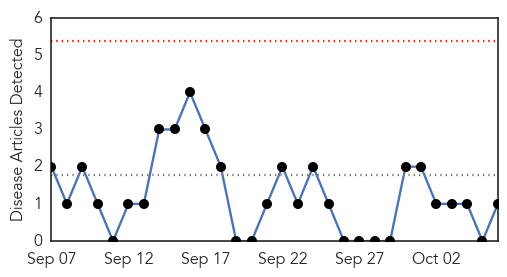
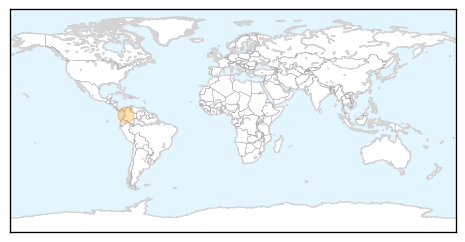

MERS
30-Day Web Trend
0 alerts, 0 warnings

30-Day Twitter Trend
1 alerts, 0 warnings

Article Locations

Article Confidences

Top Articles:
- 0.989
- DOH: Philippines still not MERS-CoV-free
- 0.986
- Haj pilgrim hospitalised on Mers suspicion
- 0.980
- Yala woman tested for 'Mers'
- 0.976
- Yala woman tested for MERS after Haj trip
- 0.975
- Haj pilgrim in Yala 'may have Mers'
- 0.971
- Philstar Mobile
- 0.959
- Garin: PH not yet MERS-CoV free as 5 persons under strict monitoring
- 0.958
- 5 persons monitored for MERS-Cov
- 0.954
- Saudi national visiting Philippines dead; suspected death by MERS
- 0.865
- KUNA : Saudi Ministry of Health takes measures to control malaria
- 0.850
- Focus on polio eradication, worldwide ‘health security’; ‘Buckle up to tackle infectious diseases’
Top Tweets:
- 0.807
- AFD blog `Saudi Arabia: 5 Days Without A Reported MERS Case' MERS-CoV http://t.co/1WNve6cxeI
Pertussis
30-Day Web Trend
0 alerts, 0 warnings

30-Day Twitter Trend
0 alerts, 0 warnings

Article Locations
Article Confidences

Top Articles:
Top Tweets:
-
No tweets found for Oct 06, 2015